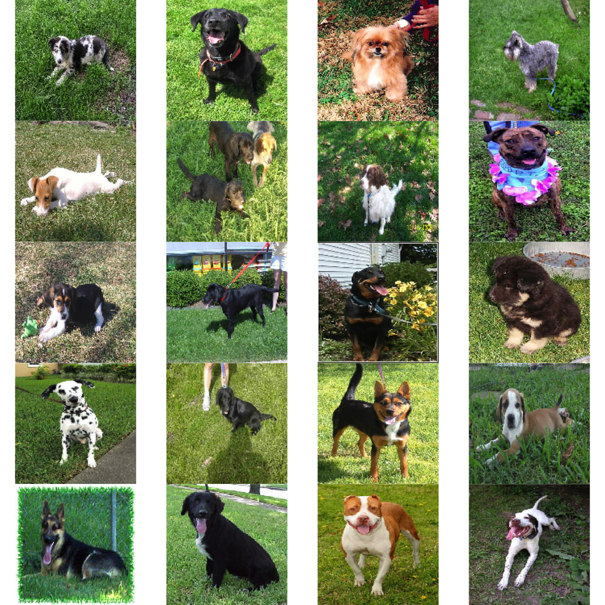
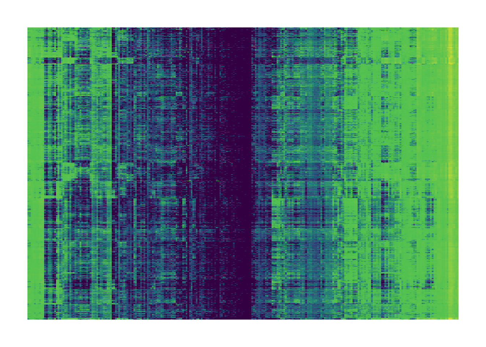
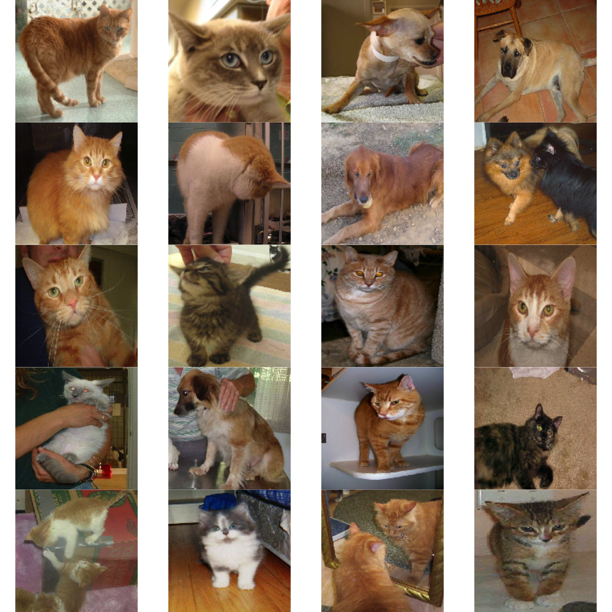

library(dplyr)
library(keras)
library(magrittr)
library(pdist)
library(purrr)
library(stringr)
library(superheat)
library(tidymodels)
set.seed(479)Collections of Features
Analyzing feature activations across datasets
Reading (1, 2), Recording, Rmarkdown
The previous notes gave us a look into the features learned by a deep learning model. However, we could only look at one feature within one layer at a time. We also only studied an individual image. If we want to better understand the representations learned by a network, we will need ways of analyzing collections of features taken from throughout the network, across entire datasets.
This seems like an impossible task, but it turns out that, in real-world models, the learned features tend to be highly correlated. Certain patterns of activation tend to recur across similar images. This kind of structure makes it possible to use clustering and dimensionality-reduction to begin to make sense of the learned representations of individual networks.
To illustrate this idea, we will download the same model from before along with a larger subsample of images used in training.
f <- tempfile()
download.file("https://uwmadison.box.com/shared/static/dxibamcr0bcmnj7xazqxnod8wtew70m2.rda", f)
images <- get(load(f))
f <- tempfile()
download.file("https://uwmadison.box.com/shared/static/9wu6amgizhgnnefwrnyqzkf8glb6ktny.h5", f)
model <- load_model_hdf5(f)- The code block below save features from layers 6 and 8 from this model, for all the images we downloaded. The code for extracting features is the same as from the previous lecture, except instead of extracting features from all layers, we’re only considering these later ones. The reason we’ve focused on these deeper layers is that (1) they are smaller, so we will consume less memory on our computers, and (2) they correspond to the higher-level concepts which are more difficult to understand directly, unlike the simple edge detectors in the initial layers.
l <- c(model$layers[[6]]$output, model$layers[[8]]$output)
activation_model <- keras_model(inputs = model$input, outputs = l)
features <- predict(activation_model, images)32/32 - 2s - 2s/epoch - 55ms/stepideally, we could work with a matrix of samples by features. the \(ij^{th}\) element would be the activation of feature \(j\) on observation \(i\).
this is unfortunately not immediately available. as we saw before, each feature map is actually a small array across spatial contexts, not a single number. there is no single way to aggregate across a feature map, and it is common to see people use the maximum, average, norm, or variance of a feature map as a summary for how strongly that feature activates on a given image. we will take the mean of activations.
feature_means <- function(h) {
apply(h, c(1, 4), mean) |>
as_tibble()
}
h <- map_dfc(features, feature_means) %>%
set_colnames(str_c("feature_", 1:ncol(.))) |>
mutate(id = row_number())- Given this array, we can ask questions like, which neurons are most activated for a particular image? or, which images induce the largest activations for a particular neuron? In the block below, we find the 20 images that activate the most for the third feature map in layer 6. This neuron seems to have learned to recognize grass. Perhaps unsurprisingly, all the images are of dogs.
top_ims <- h %>%
slice_max(feature_3, n = 20) %>%
pull(id)
par(mfrow = c(5, 4), mai = rep(0.00, 4))
out <- images[top_ims,,,] %>%
array_tree(1) %>%
map(~ plot(as.raster(., max = 255)))
This particular example should serve as a kind of warning. While it’s easy to imbue models with human-like characteristics, they often arrive at the answers they need in unexpected ways. We asked the model to distinguish between cats and dogs, but it is using whether the image has grass in it as a predictor. While for this dataset this may be accurate, I would expect this model to fail on an image of a cat in a grassy field.
Instead of only investigating one neuron, we can consider all the images and neurons simultaneously. The code below makes a heatmap of the average feature activations from before. Each row is an image and each column is a feature from either layers 6 or 8. A similar example is given in the reading, where coordinated views reveal that certain patterns of neuron activation encode the lifts of the pen or specific curve shapes in a handwriting generation network.
superheat(
h %>% select(-id),
pretty.order.rows = TRUE,
pretty.order.cols = TRUE,
legend = FALSE
)
- We can also apply clustering and dimensionality reduction ideas to understand the collection of mean feature activations. For example, below we run \(K\)-means across images, with the hope of finding images that are viewed similarly according to the model. The 20 images closest to the centroid of cluster 3 are printed below. It seems like the model has learned to cluster all the orange images together1. This is a little surprising, considering that there are both cats and dogs that are orange, so this isn’t a particularly discriminating feature. It also suggests a way to improve the model – we could train it on recolorized input images, so that it is forced to discover features that are unrelated to color2.
select_features <- function(x) {
dplyr::select(x, starts_with("feature"))
}
cluster_result <- kmeans(select_features(h), centers = 25, nstart = 20)
centroids <- tidy(cluster_result)
D <- pdist(select_features(centroids), select_features(h)) |>
as.matrix()
par(mfrow = c(5, 4), mai = rep(0.00, 4))
near_centroid <- order(D[3, ])[1:20]
out <- images[near_centroid,,, ] |>
array_tree(1) %>%
map(~ plot(as.raster(., max = 255)))
- In general, we can treat the activations generated by a deep learning model as themselves the object of data analysis. This can help us determine whether the kinds of features that we want it to (high-level concepts, rather than just colors or textures). It can also highlight instances where the model learns features associated with concepts that we would rather it be invariant to (e.g., changes in season, variations in lighting).